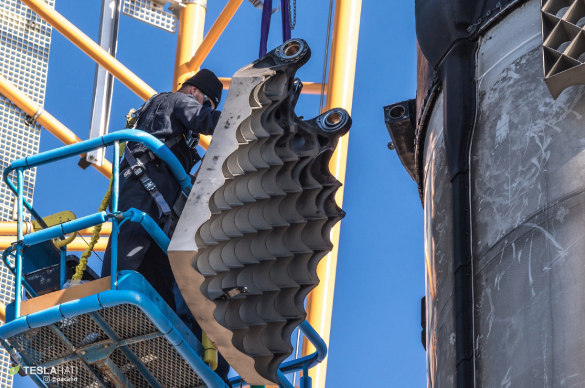

Click on the text to explore more about SpaceX and the Falcon Heavy:
Reusability
Reusability is the key concept behind the SpaceX rocket designs. Being able to use a rocket over and over translates into a cheaper launch price of the rocket. Most rockets are built to be one use, but reusable rockets cost less. The Falcon 9 is very popular as it launches a rocket and lands the first stage upright. The Falcon Heavy replicates this task but thrice a mission. By landing rockets and reusing them, SpaceX does not have to produce more rocket bodies, making it cheaper.

The titanium grid fins seen above allow the rocket to be steered on the way back to land. Controlling the descent of the rocket allows it to land accurately on the landing pad or on a drone ship. Originally the grid fins were aluminium, the titanium ones were used because it can be used over and over. Each landing fin is fabricated from a single piece of titanium and about as tall as a person, making it costly if not reused.
The landing legs are also essential for landing a rocket. They were designed in a way that minimized drag on the way up and on the way down, they can fold out and allow the rocket to have a greater base to land on.
Manufacturing
Before SpaceX, agencies such as the National Aeronautics and Space Administration (NASA) bought engines, computers, control systems, and sensors from other companies, who had to buy smaller components from their suppliers. Each chain of company had to sell their products at a mark up to be profitable. As this goes through the supply chain, the extra cost adds up to become expensive. At the top of the chain, NASA had to hire people to figure out how to assemble all the components together. SpaceX on the other hand, utilizes an old process called vertical integration, where they create most of their own components from scratch. As a result of creating most components, the parts were created specifically for each other. The in-house development ensured that the production line was fast and reliable since they are experts on those parts (Greg). Although it allows SpaceX to create cheaper parts, it is risky if one step is not completed, the rocket would not become completed. In his essay, Platforms, Steven Johnson discusses how innovations are created upon platforms that provide the basis for new innovations. He states, “[M]odern scientific paradigms are rarely overthrown. Instead, they are built upon. They create a platform that supports new paradigms above them,” (Johnson, 117). In this sense, SpaceX used the vertical integration concept as a platform to manufacture their own rockets.
Falcon
The Falcon Heavy is three Falcon 9 rockets strapped together. Without perfecting the Falcon 9, it was difficult to produce the Falcon Heavy. The Falcon Heavy has been delayed over five years before it's first launch, largely due to the fact that the Falcon 9 was still going through upgrades. The Falcon 9 rocket served as a platform for the Falcon Heavy as well since it takes an already proven concept and replicates it on a larger scale with the Falcon Heavy.
Engines
SpaceX created many iterations of the Merlin engine, before finalizing the Merlin 1D engine. The engines use liquid propellant which is dense in energy. The Merlin engine is one of the most efficient rocket engines ever created. Twenty seven of these engines are on the bottom of a Falcon Heavy and one engine at the top for the second stage. SpaceX have become very efficient at producing these engines and produce a few hundred engines a year.
Core
The center booster is referred to as the core. It is in the middle and taller than the side boosters. This is because it carries more fuel and it also carries the second stage. The second stage holds the payload and has its own engine for operation in orbit. With the core booster firing its engines longer than the side boosers, it must land at sea on a drone ship. Of the two Falcon Heavy missions so far, only one booster successfully landed, but it was later lost at sea during a storm.
Side Boosters
The side boosters are reused boosters from Falcon 9 launches. They land at Landing Zong 1 and 2 after the Falcon Heavy launches and of the two Falcon Heavy missions so far, all four side boosters landed successfully. The side boosters do not land exactly at the same time to avoid the risk of one booster interfering with the other booster's radar system.
Payload
The Falcon Heavy can carry over 140,000 pounds into outer space. This section explores the past payload during the test mission. Above, the test dummy, Starman, is sitting in Elon Musk's own Tesla Roadster in a Trans-Mars orbit. The plan is for the roadster to orbit the sun and Mars.
The video above is a quick recap of the first Falcon Heavy launch and the payload being sent into space. The song was played in the car during the launch.
This video shows Starman's journey into space. This song was originally going to be played during the journey to space.
Elon Musk is even shocked at his own accomplishments. He said that it would be considered a success for the Falcon Heavy to survive over 20 seconds and not damage the launch pad. He says "Even crazy things come true."
Below is a location update for the Roadster. It is updated from the r/SpaceX API every ten minutes.